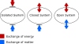

system
form

Source: Wikipedia
Wikipedia Page (Something wrong with this association? Let us know.)
Wikidata Page (Something wrong with this association? Let us know.)
Occurs in:
- ground_interbed_system__areal_extent
- ground_no-delay-interbed_system__elastic_skeletal_storage_coefficient
- ground_no-delay-interbed_system__inelastic_skeletal_storage_coefficient
- ground_no-delay-interbed_system_compaction__initial_volume-per-area_density
- ground_delay-interbed_system_water__initial_head
- ground_delay-interbed_system_water__initial_preconsolidation_head
- ground_delay-interbed_system_compaction__initial_volume-per-area_density
- ground_delay-interbed_system__equivalent_thickness